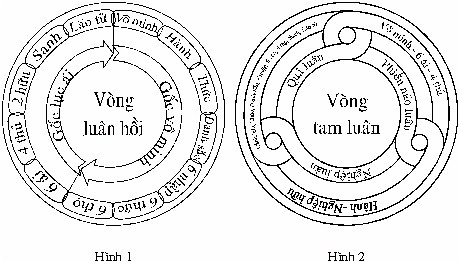
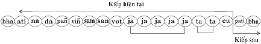
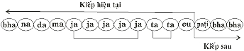

|
Tìm hiểu PHÁP HÀNH THIỀN TUỆ - Tỳ khưu HỘ PHÁP
PHẦN II PHÁP HÀNH (BHĀVANĀ) 10. NHỮNG PHÁP NÊN BIẾT (tiếp theo) 17- Ðức Phật Xuất Hiện Trên Thế Gian Ðức Phật Gotama đã khám phá ra con đường cổ xưa duy nhất này rồi, Ngài đã thuyết giảng trong bài kinh Ðại niệm xứ (Mahāsati-patïtïhānasutta) mở đầu rằng: "Ekāyano ayamï bhikkhave maggo...". "Này chư Tỳ khưu, đạo này là con đường duy nhất...", con đường duy nhất này mà chư Phật thời quá khứ đã tiến hành, Ðức Phật hiện tại đang tiến hành, và chư Phật vị lai cũng sẽ tiến hành theo con đường duy nhất này để chứng ngộ chân lý Tứ thánh đế, chứng đắc 4 Thánh Ðạo, 4 Thánh Quả và Niết Bàn. Chư Phật Ðộc Giác cũng chính tự mình khám phá ra con đường duy nhất này, rồi tiến hành để đạt đến quả vị Ðộc Giác Phật. Còn chư bậc Thanh Văn thì tự mình không thể khám phá ra con đường duy nhất này, mà cần phải nhờ được nghe từ kim ngôn của Ðức Chánh Ðẳng Giác, rồi tiến hành theo con đường duy nhất này, mới có thể chứng ngộ chân lý Tứ thánh đế, chứng đắc từ Nhập Lưu Thánh Ðạo, Nhập Lưu Thánh Quả cho đến Arahán Thánh Ðạo, Arahán Thánh Quả trở thành bậc Thánh Thanh Văn đệ tử của Ðức Phật. Con đường duy nhất ấy là "Pháp hành Tứ niệm xứ" (cattāro satipatïtïhānā). Trong bài kinh Mahāsatipaṭṭhānasutta [20] : Ðại tứ niệm xứ, mà Ðức Phật đã thuyết giảng tại xứ Kuru (miền bắc Ấn Ðộ) để tế độ dân chúng xứ Kuru. Trong Chú giải bài kinh này, có những mẫu chuyện khiến chúng ta phải suy tư. Dân chúng xứ Kuru, mỗi khi gặp nhau thường luận về pháp hành tứ niệm xứ; hoặc đặc câu hỏi về pháp hành tứ niệm xứ để đánh giá trị về người ấy. Chẳng hạn, gặp một cô tớ gái, người ta hỏi rằng: – "Ammā, tvaṃ kataraṃ satipaṭṭhānabhāvanaṃ manasikarosi? Nếu cô bé trả lời rằng: – Na kiñci. Cô bé liền bị chê trách rằng: – Dhiratthu tava jīvitaṃ, jīvamānāpi tvaṃ matasadisā! Rồi người ta khuyên dạy cô bé rằng: – Mā dāni puna evamakāsi. Sau đó người ấy truyền dạy đối tượng Tứ niệm xứ nào đó cho cô bé. Khi cô bé tiến hành Tứ niệm xứ theo đối tượng đã học, cô bé liền được tán dương ca tụng rằng: – Sādhu! Sādhu! Tốt lành thay! Tốt lành thay ! "Tava jīvitaṃ sujīvitaṃ, tvaṃ nāma manussattaṃ pattā,
tavatthāya Sammāsambuddho uppanno...". [21] Ðó là quan niệm sống của người xứ Kuru, nơi mà Ðức Thế Tôn thuyết bài kinh Ðại Tứ niệm xứ. Hầu hết người dân xứ Kuru là bậc xuất gia và người tại gia cư sĩ. Mọi giai cấp như dòng Bà la môn, dòng vua chúa, giới buôn bán, giới công nhân, người dân thường, cho đến hàng tôi tới... bất kỳ nơi nào, hễ khi họ gặp nhau, họ thường luận đạo về pháp hành Tứ niệm xứ, về phương pháp tiến hành Tứ niệm xứ và kết quả của sự tiến hành Tứ niệm xứ. Trong Chú giải còn dạy rằng: Không những người dân xứ Kuru quan tâm đến sự tiến hành Tứ niệm xứ, mà còn có loài súc sanh như con chim vẹt nhỏ (suvapotaka) tên là Buddharakkhita, sống nương nhờ ở tu viện Tỳ khưu ni, con chim vẹt nhỏ ấy cũng biết tiến hành Tứ niệm xứ, phần niệm thân. Ðức Phật xuất hiện trên thế gian là một điều hiếm có. Mỗi chúng sinh quanh quẩn trong vòng tử sanh luân hồi từ vô thủy, trải qua vô số kiếp không sao kể xiết; trong vô số kiếp ấy, kiếp nào được gặp Ðức Phật hay giáo pháp của Ngài thật là điều hy hữu, không dễ gì có được cơ hội tốt đến như vậy. Cho nên, kiếp này có duyên lành, dầu không gặp được Ðức Phật, nhưng còn may mắn gặp được giáo pháp của Ngài, không nên bỏ lỡ một dịp may hiếm có, một cơ hội tốt đẹp này, nên có đức tin trong sạch nơi Ðức Phật, Ðức pháp, Ðức Tăng, nên quy y Tam bảo, nên tạo duyên lành nơi chánh pháp, để có chánh kiến, nên có sự tinh tấn tiến hành Tứ niệm xứ, hoặc tiến hành thiền tuệ. Ngay kiếp hiện tại này, nếu đã có duyên lành từ nhiều đời nhiều kiếp trong quá khứ hỗ trợ, có đầy đủ ba pháp hạnh la mật, có thể chứng ngộ chân lý Tứ thánh đế, chứng đắc Thánh Ðạo, Thánh Quả nào, trở thành bậc Thánh nhân thì cao quý biết dường nào! Nếu kiếp hiện tại này, chưa chứng đắc Thánh Ðạo, Thánh Quả nào, thì âu cũng là một cơ hội tốt, một dịp may để bồi bổ ba la mật, hy vọng chắc chắn sẽ chứng ngộ chân lý Tứ thánh đế, chứng đắc Thánh Ðạo, Thánh Quả ở vị lai. Nay dầu Ðức Phật đã tịch diệt Niết Bàn, song giáo pháp của Ðức Phật đang còn lưu truyền trên thế gian. Tất cả những người Phật tử chúng ta còn có cơ hội theo học pháp học và hành theo pháp hành Tứ niệm xứ hoặc pháp hành thiền tuệ, hầu đem lại lợi ích vô cùng lớn lao thật sự cho mỗi người Phật tử chúng ta, để tránh khỏi phải ân hận hối tiếc khi tuổi già sức yếu, muốn học, muốn hành cũng không thể nào được! 18- Tính Chất Ðặc Biệt Pháp Hành Tứ Niệm Xứ 18.1- Pháp hành Tứ niệm xứ là nơi nương nhờ thật sự của chính mình Một thuở nọ, Ðức Thế Tôn ngự tại chùa Veḷuvana gần thành Vesāli, lúc bấy giờ, Ngài lâm bệnh nặng tưởng chừng như gần tịch diệt Niết Bàn. Khi ấy, Ðức Thế Tôn có đầy đủ chánh niệm, trí tuệ tỉnh giác, nhờ nhập Arahán Quả Ðịnh, nên qua khỏi. Sau khi Ðức Thế Tôn khỏi bệnh, Ngài ngự ra nơi giảng đường, Ðại Ðức Ānanda đến hầu Ðức Thế Tôn, đảnh lể Ngài rồi ngồi nơi hợp lẽ. Ðại Ðức Ānanda bạch rằng: "Kính bạch Ðức Thế Tôn, con thấy Ðức Thế Tôn lâm bệnh nặng, tâm của con cảm thấy tối tăm mờ mịt, không còn nhận biết phương hướng. Dầu pháp hành Tứ niệm xứ không còn hiện rõ trong tâm con, bởi căn bệnh trầm trọng của Ðức Thế Tôn, nhưng con tự an ủi rằng: "Chưa có lời di chúc đến chư Tỳ khưu Tăng, thì có lẽ Ðức Thế Tôn chưa tịch diệt Niết Bàn". Ðức Thế Tôn dạy rằng: Này Ānanda, bây giờ chư Tỳ khưu Tăng còn hy vọng gì nơi Như Lai nữa? Chánh pháp Như Lai đã thuyết giảng không còn cất giấu lại một pháp nào cả. Như Lai không phân biệt pháp này, đối với người thân tín bên trong, cũng không phân biệt pháp kia, đối với người lạ bên ngoài. Ðối với vị thầy khác, thường cất giấu pháp quan trọng, đến khi gần chết mới truyền cho người học trò tín cẩn. Ðiều ấy không hề có nơi Như Lai. Vị Thầy nào nghĩ rằng: "Ta là người lãnh đạo nhóm Tỳ khưu Tăng, hay nhóm Tỳ khưu Tăng nương nhờ ở nơi ta, thì Vị Thầy ấy mới có lời di chúc đến Tỳ khưu Tăng". Này Ānanda, Như Lai không nghĩ rằng: "Như Lai là người lãnh đạo nhóm Tỳ khưu Tăng, hay nhóm Tỳ khưu Tăng nương nhờ nơi Như Lai". Như vậy, tại sao Như Lai lại có lời di chúc đến Tỳ khưu Tăng? Bây giờ Như Lai đã già rồi, quá thời, tuổi cao, đến 80 tuổi rồi. Ví như chiếc xe cũ, dùng được là nhờ sửa chữa như thế nào, thân của Như Lai cũng như thế ấy, luôn luôn cần được sửa chữa bằng cách nhập Arahán Quả Ðịnh. Này Ānanda, khi nào Như Lai nhập Arahán Quả Ðịnh có Vô Hiện Tượng Niết Bàn làm đối tượng, diệt được các pháp trong tam giới, thọ hưởng sự an lạc Niết Bàn siêu tam giới, khi ấy Như Lai mới thật sự được an lạc. Cho nên, các con nên sống có ta [22] làm hòn đảo (trong biển khổ), có ta làm nơi nương nhờ, không nên sống có nơi nương nhờ nào khác. Nghĩa là có chánh pháp làm hòn đảo, có chánh pháp làm nơi nương nhờ, không nên sống có nơi nương nhờ nào khác. Này Ānanda, Thế nào gọi Tỳ khưu là người sống có ta làm hòn đảo, có ta làm nơi nương nhờ, không nên sống có nơi nương nhờ nào khác. Nghĩa là Tỳ khưu sống có chánh pháp làm hòn đảo, có chánh pháp làm nơi nương nhờ, không nên sống có nơi nương nhờ nào khác. Tỳ khưu trong Phật giáo này: Là người có tâm tinh tấn không ngừng, có chánh niệm trực nhận, có trí tuệ tỉnh giác trực giác thấy rõ biết rõ "thân trong thân" để diệt tham tâm, hài lòng, và sân tâm, không hài lòng trong ngũ uẩn chấp thủ này. Là người có tâm tinh tấn không ngừng, có chánh niệm trực nhận, có trí tuệ tỉnh giác trực giác thấy rõ biết rõ "thọ trong thọ" để diệt tham tâm, hài lòng, và sân tâm, không hài lòng trong ngũ uẩn chấp thủ này. Là người có tâm tinh tấn không ngừng, có chánh niệm trực nhận, có trí tuệ tỉnh giác trực giác thấy rõ biết rõ "tâm trong tâm" để diệt tham tâm, hài lòng, và sân tâm, không hài lòng trong ngũ uẩn chấp thủ này. Là người có tâm tinh tấn không ngừng, có chánh niệm trực nhận, có trí tuệ tỉnh giác trực giác thấy rõ biết rõ "pháp trong pháp" để diệt tham tâm, hài lòng, và sân tâm, không hài lòng trong ngũ uẩn chấp thủ này.... Này Ānanda, Như vậy gọi là Tỳ khưu sống có ta làm hòn đảo, có ta làm nơi nương nhờ, không sống có nơi nương nhờ nào khác. Nghĩa là Tỳ khưu sống có chánh pháp làm hòn đảo, có chánh pháp làm nơi nương nhờ, không sống có nơi nương nhờ nào khác. Nhóm Tỳ khưu nào hài lòng thỏa thích trong pháp hành, nhóm Tỳ khưu ấy chỉ nên tiến hành Tứ niệm xứ, sẽ là người cao quý". [23] Qua đoạn kinh trên, chúng ta thấy rõ được tính ưu việt của Ðức Phật và giáo pháp vô ngã của Ngài. 18.2- Pháp hành Tứ niệm xứ liên quan đến sự tồn vong của chánh pháp Một thuở nọ, Ðức Thế Tôn ngự tại chùa Jetavana của ông phú hộ Anāthapiṇṇika gần thành Sāvatthi. Khi ấy, có một Bà la môn đến hầu Ðức Thế Tôn, đảnh lễ Ngài xong, Bà la môn ngồi một bên hợp lẽ, rồi bạch rằng: "Kính bạch Ðức Thế Tôn, do nhân nào, duyên nào làm cho chánh pháp của Ðức Thế Tôn không được tồn tại, sau khi Ðức Thế Tôn tịch diệt Niết Bàn? Và do nhân nào, duyên nào làm cho chánh pháp của Ðức Thế Tôn được tồn tại, sau khi Ðức Thế Tôn tịch diệt Niết Bàn? Ðức Thế Tôn bèn dạy: Này Bà la môn, bởi vì các hàng đệ tử của Như Lai không tiến hành Tứ niệm xứ; đó là nhân, là duyên làm cho chánh pháp không được tồn tại, sau khi Như Lai tịch diệt Niết Bàn. Và do các hàng đệ tử của Như Lai tinh tấn tiến hành Tứ niệm xứ; đó là nhân, là duyên làm cho chánh pháp được tồn tại, sau khi tịch diệt Niết Bàn. Tứ niệm xứ là thế nào? Tỳ khưu hay hành giả trong Phật giáo này: Là người có tâm tinh tấn không ngừng, có chánh niệm trực nhận, có trí tuệ tỉnh giác trực giác thấy rõ biết rõ "thân trong thân" để diệt tham tâm, hài lòng, và sân tâm, không hài lòng trong ngũ uẩn chấp thủ này. Là người có tâm tinh tấn không ngừng, có chánh niệm trực nhận, có trí tuệ tỉnh giác trực giác thấy rõ biết rõ "thọ trong thọ" để diệt tham tâm, hài lòng, và sân tâm, không hài lòng trong ngũ uẩn chấp thủ này. Là người có tâm tinh tấn không ngừng, có chánh niệm trực nhận, có trí tuệ tỉnh giác trực giác thấy rõ biết rõ "tâm trong tâm" để diệt tham tâm, hài lòng, và sân tâm, không hài lòng trong ngũ uẩn chấp thủ này. Là người có tâm tinh tấn không ngừng, có chánh niệm trực nhận, có trí tuệ tỉnh giác trực giác thấy rõ biết rõ "pháp trong pháp" để diệt tham tâm, hài lòng, và sân tâm, không hài lòng trong ngũ uẩn chấp thủ này.... Này Bà la môn, bởi vì các hàng đệ tử của Như Lai không tiến hành Tứ niệm xứ; đó là nhân, là duyên làm cho chánh pháp không được tồn tại, sau khi Như Lai tịch diệt Niết Bàn. Và do các hàng đệ tử của Như Lai tinh tấn tiến hành Tứ niệm xứ; đó là nhân, là duyên làm cho chánh pháp được tồn tại, sau khi tịch diệt Niết Bàn". [24] Qua đoạn kinh trên cho chúng ta biết, pháp hành Tứ niệm xứ đóng vai trò rất quan trọng trong sự tồn vong chánh pháp của Ðức Phật. 19- Tử Sanh Luân Hồi (Saṃsāravaṭṭa) Do nguyên nhân nào chúng sinh phải chịu cảnh tử sanh luân hồi? Sở dĩ chúng sinh phải chịu cảnh tử sanh luân hồi, là vì vô minh che án sự thật chân lý Tứ thánh đế, do tham ái ràng buộc dắt dẫn tái sanh trong ba giới bốn loài, sanh rồi tử, tử rồi lại sanh, liên tục không ngừng từ vô thủy cho đến vô chung, trong vòng luẩn quẩn không cùng tận, được tượng trưng như một bánh xe lăn, gọi là bánh xe luân hồi. Theo chánh pháp của Ðức Phật, bánh xe tử sanh luân hồi chính là thập nhị duyên sanh (paṭiccasamuppāda) có 12 chi pháp: 1- Vô minh (avijjā): Ðó là si tâm sở đồng sanh với 12 bất thiện tâm, không biết 8 điều như sau:
Vô minh chỉ không biết 8 điều này, ngoài ra, vô minh lại có thể biết tất cả mọi điều khác. Do vô minh làm duyên, nên hành sanh. (Avijjāpaccayā saṅkhāra). 2- Hành (saṅkhārā): Ðó là tác ý tâm sở (cetanā) trong 29 tâm, là quả của vô minh là:
Tác ý ở trong 29 tâm này là quả của vô minh, phát sanh do bởi vô minh làm duyên. Do hành làm duyên, nên thức sanh (Saṅkhārapaccayā viññāṇaṃ). 3- Thức (viññāṇa): Ðó là tam giới quả tâm thức, gồm có 32 quả tâm, là quả của hành:
32 tam giới quả tâm thức có 2 phận sự: 3.1- Paṭisandhiviññāṇa: Quả tâm thức gồm có 19 tâm làm phận sự dắt dẫn tái sanh kiếp sau trong ba giới bốn loài.
3.2- Pavattiviññāṇa: Quả tâm thức gồm đủ 32 quả tâm làm phận sự cho quả sau khi tái sanh. Quả tâm thức có phận sự thọ nhận quả xấu hoặc quả tốt do bất thiện nghiệp hay thiện nghiệp đã tạo ở quá khứ. 32 tam giới quả tâm thức này là quả của hành, phát sanh do bởi hành làm duyên. Do thức làm duyên, nên danh sắc sanh (Viññāṇapaccayā nāmarūpaṃ). 4- Danh (nāmadhamma): Ðó là danh pháp tâm sở có 35 tâm sở hợp với 32 tam giới quả tâm thức. Sắc (rūpadhamma): Ðó là sắc pháp sanh từ nghiệp, lúc tái sanh và sắc pháp sanh từ tâm, sau khi tái sanh. Những danh pháp, sắc pháp này là quả của thức, được phát sanh do bởi 32 tam giới quả tâm thức làm duyên. Do danh sắc làm duyên, nên lục nhập sanh (Nāmarūpapaccayā sāḷāyatanaṃ). 5- Lục nhập (sāḷāyatana): Ðó là lục xứ: nhãn xứ, nhĩ xứ, tỷ xứ, thiệt xứ, thân xứ và ý xứ. Lục nhập này là quả của danh sắc, được phát sanh do bởi danh sắc làm duyên. Do lục nhập làm duyên, nên lục xúc sanh (Sāḷāyatanapaccayā phasso). 6- Xúc (phassa): Ðó là lục xúc: nhãn xúc, nhĩ xúc, tỷ xúc, thiệt xúc, thân xúc và ý xúc. Lục xúc này là quả của lục nhập, được phát sanh do bởi lục nhập làm duyên. Do lục xúc làm duyên, nên lục thọ sanh (Phassapaccayā vedanā). 7- Thọ (vedanā): Ðó là lục thọ: nhãn xúc thọ, nhĩ xúc thọ, tỷ xúc thọ, thiệt xúc thọ, thân xúc thọ, và ý xúc thọ. Lục thọ này là quả của lục xúc, được phát sanh do bởi lục xúc làm duyên. Do lục thọ làm duyên, nên lục ái sanh (Vedanāpaccayā taṇhā). 8- Ái (taṇhā): Ðó là lục ái: sắc ái, thanh ái, hương ái, vị ái, xúc ái và pháp ái, (tính rộng có 108 loại ái). Lục ái này là quả của lục thọ, được phát sanh do bởi lục thọ làm duyên. Do lục ái làm duyên, nên tứ thủ sanh (Taṇhāpaccayā upādānaṃ). 9- Thủ (upādāna): Ðó là 4 thủ: chấp thủ trong lục dục, chấp thủ trong tà kiến, chấp thủ trong pháp hành sai và chấp thủ trong ngã kiến. Tứ thủ này là quả của lục ái, được phát sanh do bởi lục ái làm duyên. Do tứ thủ làm duyên, nên nhị hữu sanh (Upādānapaccayā bhavo). 10- Hữu (bhava): Ðó là nhị hữu: nghiệp hữu và cảnh hữu. 10.1- Nghiệp hữu (kammabhava): là tác ý tâm sở (cetanā).
Tác ý tâm sở trong 29 tâm này gọi là nghiệp hữu. 10.2- Cảnh hữu (uppattibhava): nơi sanh của tất cả chúng sinh trong tam giới, gồm có 31 cảnh giới. Nghiệp hữu và cảnh hữu này là quả của tứ thủ, được phát sanh do bởi tứ thủ làm duyên. Do nhị hữu làm duyên, nên sanh sanh (Bhavapaccayā jāti). 11- Sanh (jāti): Ðó là sự tái sanh kiếp sau, sự sanh đầu tiên của tam giới quả tâm trong ba giới [28] bốn loài [29] hay 3 loại chúng sinh [30] do năng lực của thiện nghiệp hay ác nghiệp:
Sự tái sanh đầu tiên của tam giới quả tâm và sắc pháp sanh từ nghiệp là quả của nghiệp hữu, phát sanh do bởi nghiệp hữu làm duyên. Do sanh làm duyên, nên lão tử... sanh (Jātipaccayā jarāmaraṇa). 12- Lão, tử (jarāmaraṇa): Ðó là sự già, sự chết là quả của sanh.
Sự già, sự chết là quả của sanh, được phát sanh do bởi sanh làm duyên. Thập nhị duyên sanh ví như một vòng xích, gồm 12 mắt xích nối lại với nhau. Cũng như vậy, trong thập nhị duyên sanh, mỗi pháp là quả của nhân này, rồi là nhân của quả kia, theo từng cặp "nhân quả liên hoàn" trải qua 3 thời từ quá khứ đến hiện tại, rồi từ hiện tại qua vị lai, theo sự diễn tiến của danh pháp, sắc pháp, và cứ thế liên tục từ vô thủy đến vô chung. Do đó, vô minh không phải là nhân đầu tiên mà chỉ là nhân của hành, vô minh còn là quả của pháp trầm luân, như Ðức Phật đã dạy: [31] "Do có sự sanh của 4 pháp trầm luân, nên có sự sanh của vô minh". Ðối với tất cả mọi chúng sinh còn là phàm nhân, thì sự tử sanh luân hồi sẽ diễn tiến từ vô thủy đến vô chung không sao biết được. Ðối với bậc Thánh nhân trong Phật giáo, dầu có sự tử sanh luân hồi từ vô thủy không sao biết được, nhưng có hữu chung, chắc chắn có giới hạn kiếp tái sanh như sau: chỉ còn tái sanh làm người và làm chư thiên ở cõi trời dục giới nhiều nhất là 7 kiếp. Trong kiếp thứ 7 ấy, chắc chắn sẽ chứng đắc Arahán Thánh Ðạo, Arahán Thánh Quả, trở thành bậc Thánh Arahán rồi tịch diệt Niết Bàn, chấm dứt tử sanh luân hồi trong tam giới. 2- Bậc Thánh Nhất Lai chỉ còn tái sanh làm người hoặc làm chư thiên ở cõi trời dục giới một kiếp nữa. Trong kiếp ấy, chắc chắn sẽ chứng đắc Arahán Thánh Ðạo, Arahán Thánh Quả, trở thành bậc Thánh Arahán rồi tịch diệt Niết Bàn, chấm dứt tử sanh luân hồi trong tam giới. 3- Bậc Thánh Bất Lai không còn tái sanh trở lại ở cõi dục giới, chỉ tái sanh ở cõi sắc giới (hay vô sắc giới), rồi chắc chắn sẽ chứng đắc Arahán Thánh Ðạo, Arahán Thánh Quả, trở thành bậc Thánh Arahán rồi tịch diệt Niết Bàn, tại cõi trời ấy, chấm dứt tử sanh luân hồi trong tam giới. 4- Bậc Thánh Arahán ngay kiếp hiện tại, khi hết tuổi thọ, sẽ tịch diệt Niết Bàn, chấm dứt sự tử sanh luân hồi trong tam giới. Ngoài 4 bậc Thánh nhân ra, còn lại tất cả mọi chúng sinh dầu ở cõi trời cao như Phạm Thiên, hoặc chư thiên, nhân loại, hay nhỏ như con kiến, côn trùng cũng phải chịu cảnh khổ tử sanh luân hồi tùy theo nghiệp của mình đã tạo. 19.1- Nhân quả ba thời (kāla) Thời (kāla) có 3: quá khứ, hiện tại, vị lai. Thập nhị duyên sanh có 12 chi pháp phân chia theo nhân quả 3 thời như sau:
Xét theo từng nhóm, liên quan với nhau thì vô minh, lục ái, tứ thủ đều thuộc về phiền não luân đi chung với nhau. Và hành (tác ý hành thiện, hành ác), nghiệp hữu đều thuộc về nghiệp luân đi chung với nhau. Xét theo chi pháp, thì sanh và lão tử thuộc quả vị lai, nhưng không có chi pháp nào riêng biệt, mà chỉ có thực tánh 5 chi pháp: thức, danh sắc, lục nhập, lục xúc, lục thọ hiện hữu mà thôi. Như vậy, thập nhị duyên sanh phân chia theo nhân quả 3 thời và theo chi pháp trở thành:
19.2- Ba điểm nối (sandhi) Ðiểm nối (sandhi) là sự nối tiếp giữa nhân với quả và giữa quả với nhân. Thập nhị duyên sanh có 12 chi pháp, có 3 điểm nối liền với nhau:
19.3- Hai gốc rễ cội nguồn (mūla) Gốc rễ (mūla) là nguyên nhân, nguồn cội làm nền tảng của sự tử sanh luân hồi trong ba giới bốn loài. Có 2 gốc rễ, đó là vô minh và tham ái. Thập nhị duyên sanh có 12 chi pháp tượng trưng như bánh xe tử sanh luân hồi. Có 2 gốc rễ làm nền tảng. A/ Nửa bánh xe đầu: bắt đầu từ nhân quá khứ cho đến quả hiện tại gồm có 7 chi pháp: vô minh, hành, thức, danh sắc, lục nhập, lục xúc, lục thọ. Trong 7 chi pháp này, vô minh là nguyên nhân quá khứ, là nguồn gốc làm nền tảng cho sự tử sanh luân hồi. B/ Nửa bánh xe sau: bắt đầu từ nhân hiện tại cho đến quả vị lai gồm có 5 chi pháp: lục ái, tứ thủ, nhị hữu, sanh, lão tử. Trong 5 chi pháp này, lục ái là nguyên nhân hiện tại, là nguồn gốc làm nền tảng của sự tử sanh luân hồi. Vô số kiếp từ vô thủy của mỗi chúng sinh, vì vô minh che án mọi thực tánh các pháp, do đó không thấy rõ, không chứng ngộ sự thật chân lý Tứ thánh đế, nên hành phát sanh, đã tạo mọi ác nghiệp và mọi thiện nghiệp do vô minh dẫn đầu, thuộc về nhân quá khứ, dẫn đến quả hiện tại là thức (quả tâm thức), có danh pháp tâm sở và sắc pháp sanh từ nghiệp đồng sanh với quả tâm thức ấy để tái sanh, và tiếp theo sau làm duyên phát sanh lục nhập, lục xúc, lục thọ. Khi nửa bánh xe đầu gồm có 7 chi pháp: vô minh, hành, thức, danh sắc, lục nhập, lục xúc, lục thọ, do vô minh là nguyên nhân, nguồn gốc dẫn đầu, luân chuyển ắt phải kéo theo nửa bánh xe sau có 5 chi pháp: lục ái, tứ thủ, nhị hữu, sanh, lão tử. Khi nửa bánh xe sau có 5 chi pháp: lục ái, tứ thủ, nhị hữu, sanh, lão tử, do lục ái là nguyên nhân, nguồn gốc dẫn đầu đẩy nửa bánh xe trước gồm 7 chi pháp: lục thọ, lục xúc, lục nhập, danh sắc, thức, hành, vô minh. Vô minh và tham ái là 2 nhân ràng buộc dắt dẫn chúng sinh trong vòng tử sanh luân hồi vô thủy vô chung. Ðức Phật dạy: "Này chư Tỳ khưu, đối với chúng sinh có vô minh che án, có tham ái ràng buộc dắt dẫn quanh quẩn trong vòng tử sanh luân hồi, không thể nào biết được khởi thủy và tận cùng. Các con nghĩ thế nào về điều này? Nước mắt của các con đã chảy ra, bởi vì mỗi khi các con gặp phải cảnh khổ sanh ly tử biệt, cảnh buồn tủi khóc than... suốt thời gian lâu dài trong kiếp tử sanh luân hồi từ vô thủy cho đến nay; số lượng nước mắt của các con so với số lượng nước biển trong 4 đại dương, số lượng nước nào nhiều hơn? Kính bạch Ðức Thế Tôn, tất cả chúng con được nghe, hiểu rõ chánh pháp Ðức Thế Tôn đã thuyết giảng, nên hiểu rằng: "Số lượng nước mắt của chúng con đã chảy ra mỗi khi gặp cảnh trái ý nghịch lòng... suốt thời gian lâu dài trong kiếp tử sanh luân hồi từ vô thủy cho đến nay; số lượng nước mắt của mỗi chúng con nhiều hơn so với số lượng nước biển trong 4 đại dương. Ðức Thế Tôn xác nhận rằng: Này chư Tỳ khưu, các con hiểu đúng vậy! Các con đã hiểu rõ được chánh pháp Như Lai đã thuyết giảng.... Ðức Thế Tôn khuyên dạy rằng: Ðiều ấy tại sao? Bởi vì đối với chúng sinh có vô minh che án, có tham ái ràng buộc dắt dẫn quanh quẩn trong vòng tử sanh luân hồi, không thể nào biết được khởi thủy và tận cùng. Này chư Tỳ khưu, như vậy đó! Ðủ để cho các con nhàm chán các pháp hữu vi, ngũ uẩn, danh pháp, sắc pháp, đủ để cho các con diệt tâm tham ái say mê, đủ để cho các con mong muốn giải thoát khổ sanh". [32] Cũng tương tự như trên, Ðức Phật còn giảng dạy rằng: Máu của mỗi chúng sinh đã đổ vì phải bị chặt đầu, khi sanh làm gà, vịt, heo, bò, trâu, dê v.v... trong suốt thời gian lâu dài trong kiếp tử sanh luân hồi từ vô thủy cho đến nay, số lượng máu ấy của mỗi chúng sinh nhiều hơn số lượng nước biển trong 4 đại dương....[32] 20- Tam Luân (tivaṭṭa) Luân: Sự luân chuyển theo chiều hướng nhất định. Thập nhị duyên sanh tượng trưng bánh xe tử sanh luân hồi được luân chuyển theo tam luân. (kilesavaṭṭa): Ðó là vô minh, lục ái, tứ thủ. 2- Nghiệp luân (kammavaṭṭa): Ðó là nghiệp hữu, hành. 3- Quả luân (vipākavaṭṭa): Ðó là cảnh hữu, thức, danh sắc, lục nhập, lục xúc, lục thọ, sanh, lão tử. Theo sự luân chuyển thì không thể phân biệt được chỗ bắt đầu và chỗ cuối cùng, nên chỉ nhận biết theo định luật nhân quả. Mà nhân quả theo thập nhị duyên sanh thì mỗi chi pháp không thuần chỉ là nhân, là quả, mà mỗi chi pháp là quả phát sanh từ nhân, rồi trở lại làm nhân cho phát sanh quả, theo định luật nhân quả liên hoàn tiếp nối nhau, thành bánh xe luân chuyển không ngừng từ kiếp này sang kiếp khác, từ vô thủy đến vô chung. 20.1- Phiền não luân khiến tạo nghiệp luân Chúng sinh còn vô minh, tham ái, thì còn nhân duyên khiến tạo nên thiện nghiệp, bất thiện nghiệp. Khi tạo thiện nghiệp, thì chỉ biết 3 loại thiện nghiệp trong tam giới cho quả an lạc ở kiếp hiện tại và nhiều kiếp vị lai. Thiện nghiệp càng cao quý thì được hưởng quả báu an lạc càng lâu dài.
Thật ra, quả báu an lạc của 3 loại thiện nghiệp không thật, vì bị vô thường biến đổi, nên cũng chỉ là khổ mà thôi; nhưng vì vô minh, không thấy rõ, biết rõ thực tánh của chúng, nên tâm tham ái hài lòng, thỏa thích, say mê trong sự an lạc tạm bợ ấy. Như vậy, gọi là phiền não luân làm nhân duyên tạo nên thiện nghiệp. Khi tạo bất thiện nghiệp, có số chúng sinh do vô minh, không biết bất thiện nghiệp cho quả khổ ở kiếp hiện tại và nhiều kiếp vị lai; lại có số chúng sinh biết bất thiện nghiệp cho quả khổ, nhưng do vô minh, phiền não có năng lực quá mạnh khiến tạo bất thiện nghiệp như sát sanh, trộm cắp, tà dâm, nói dối... bằng thân hành ác, khẩu nói ác, tâm nghĩ ác.... Như vậy gọi là phiền não luân làm nhân duyên tạo nên bất thiện nghiệp. 20.2- Nghiệp luân cho quả luân Chúng sinh còn vô minh tham ái có thiện nghiệp, bất thiện nghiệp, thì ắt phải thọ quả của thiện nghiệp, bất thiện nghiệp ấy. Thiện nghiệp cho quả thì được thọ hưởng quả báu an lạc ở kiếp hiện tại và nhiều kiếp vị lai như sau__ – Quả báu kiếp hiện tại:
– Quả báu kiếp vị lai: Dục giới thiện nghiệp cho quả tái sanh làm người, sẽ là người lục căn dầy đủ, giàu sang phú quý... hoặc tái sanh làm chư thiên ở trong 6 cõi trời dục giới, sẽ an hưởng sự an lạc, sự sống lâu ở cõi trời dục giới ấy cho đến hết tuổi thọ. Sắc giới thiện nghiệp, đó là 4 bậc thiền sắc giới, sẽ cho quả tái sanh làm phạm thiên trong 16 cõi trời sắc giới tùy theo bậc thiền sở đắc của mình, và sẽ an hưởng sự an lạc vi tế, sự sống lâu theo tuổi thọ của cõi trời sắc giới ấy. Vô sắc giới thiện nghiệp, đó là 4 bậc thiền vô sắc giới, sẽ cho quả tái sanh làm phạm thiên có tứ uẩn (không có sắc uẩn) trong 4 cõi trời vô sắc giới tùy theo bậc thiền sở đắc của mình, và sẽ an hưởng sự an lạc vi tế hơn, sự sống lâu theo tuổi thọ của cõi trời vô sắc giới ấy. Bất thiện nghiệp cho quả thì phải chịu khổ ở kiếp hiện tại và nhiều kiếp vị lai. – Quả khổ ở kiếp hiện tại:
– Quả khổ kiếp vị lai: Nếu bất thiện nghiệp nặng, thì cho quả tái sanh trong cảnh địa ngục, phải chịu thống khổ cùng cực đày đọa, hành phạt do bất thiện nghiệp của mình đã tạo. Nếu bất thiện nghiệp vừa, thì cho quả tái sanh làm atula, ngạ quỷ chịu cảnh khổ đói khát, lạnh lẽo, không có nơi nương nhờ.... Nếu bất thiện nghiệp nhẹ, thì cho quả tái sanh làm súc sanh từng loài tùy theo bất thiện nghiệp của mình đã tạo ở kiếp quá khứ. Như vậy, chúng sinh trong tam giới khác nhau là do nghiệp phân định. Bởi vì, khi tạo thiện nghiệp, hoặc bất thiện nghiệp mỗi người có tác ý (cetanā) khác nhau, mặc dầu cùng chung một đối tượng, vì vậy, đến khi nghiệp cho quả khác nhau. 20.3- Quả luân sanh phiền não Quả luân là sự hiện hữu của mỗi chúng sinh trong tam giới: chúng sinh có ngũ uẩn ở cõi dục giới và cõi sắc giới, hoặc chúng sinh có tứ uẩn (không có sắc uẩn) ở cõi vô sắc giới, hoặc chúng có nhất uẩn: sắc uẩn (không có 4 danh uẩn), ở cõi sắc giới Vô tưởng thiên. Tất cả chúng sinh này đều chưa diệt đoạn tuyệt được phiền não, vô minh, tham ái..., cho nên, khi có nhân duyên thì phiền não phát sanh khiến tạo nên thiện nghiệp hoặc bất thiện nghiệp; rồi trở lại vòng tam luân chuyển biến không ngừng từ kiếp này sang kiếp khác, từ vô thủy đến vô chung chịu cảnh khổ tử sanh luân hồi trong ba giới bốn loài. Ngoài ra chỉ có bậc Thánh Arahán đã diệt đoạn tuyệt được vô minh, tham ái thuộc phiền não luân, nên đã chặt đứt, làm tan rã vòng tam luân, làm cho nó không thể luân chuyển được nữa. Biểu tượng vòng luân hồi, vòng tam luân  Giải thích biểu tượng 2 vòng tròn luân hồi. Thập nhị duyên sanh (hình 1). Thập nhị duyên sanh có 12 chi pháp là: vô minh, hành, thức, danh sắc, lục nhập, lục xúc, lục thọ, lục ái, tứ thủ, nhị hữu, sanh, lão tử.... Gồm có 2 gốc: có 7 chi pháp: vô minh, hành, thức, danh - sắc, lục nhập, lục xúc, lục thọ. 2- Gốc tham ái có 5 chi pháp: lục ái, tứ thủ, nhị hữu, sanh, lão tử.... Tam luân (hình 2). Tam luân có 3 loại là: có 3 chi pháp: vô minh, tham ái, tứ thủ. 2- Nghiệp luân có 2 chi pháp: hành, nghiệp hữu. 3- Quả luân có 8 chi pháp: cảnh hữu, thức, danh sắc, lục nhập, lục xúc, lục thọ, sanh, lão tử.... 20.4- Tử sanh luân hồi Tử ở kiếp này, sanh ở kiếp sau, và cứ như thế diễn tiến theo đường vòng trong tam giới đối với chúng sinh còn vô minh, tham ái. Dầu chúng sinh nhỏ như con kiến, con thiêu thân, hoặc chúng sinh lớn như chư thiên, phạm thiên; thậm chí kể cả các bậc Thánh Hữu Học: bậc Thánh Nhập Lưu, bậc Thánh Nhất Lai, bậc Thánh Bất Lai vẫn còn vô minh, tham ái, nên vẫn còn phải tái sanh kiếp sau; chỉ ngoại trừ bậc Thánh Arahán đã diệt đoạn tuyệt được hoàn toàn mọi vô minh, tham ái, không còn dư sót, đến khi tịch diệt (tử) không còn tái sanh kiếp sau nữa; chấm dứt tử sanh luân hồi trong ba giới bốn loài. Chúng sinh còn vô minh, tham ái, sau khi chết, do nghiệp của mình đã tạo cho quả tái sanh kiếp sau__ * Nếu bất thiện nghiệp hoặc ác nghiệp có cơ hội cho quả thì tái sanh làm chúng sinh trong 4 cảnh khổ: địa ngục, atula, ngạ quỷ, súc sanh tuỳ theo năng lực của ác nghiệp, phải chịu khổ do ác nghiệp của mình đã tạo; thời gian lâu hoặc mau còn tuỳ theo ác nghiệp nặng hoặc nhẹ; nếu ác nghiệp nặng, thì chịu khổ thời gian lâu dài, nếu ác nghiệp nhẹ, thì chịu khổ thời gian ngắn. * Nếu dục giới thiện nghiệp có cơ hội cho quả, thì tái sanh làm chúng sinh trong cảnh an lạc như là: Tái sanh làm người trong cõi người thường hưởng được sự an lạc hoặc khổ não bởi do thiện nghiệp hoặc ác nghiệp của mình đã tạo từ những kiếp quá khứ cho đến kiếp hiện tại, cho đến hết tuổi thọ. Tuổi thọ của con người không nhất định. Tái sanh làm chư thiên trong 6 cõi trời dục giới tuỳ theo năng lực của thiện nghiệp của mình đã tạo, hưởng được sự an lạc trong cõi trời ấy cho đến hết tuổi thọ. Tuổi thọ của chư thiên trong mỗi cõi trời dục giới có thời gian nhất định. Nếu sắc giới thiện nghiệp, thì chắc chắn cho quả tái sanh làm phạm thiên trong 16 cõi trời sắc giới, tuỳ theo bậc thiền sở đắc của mình. Phạm thiên trong mỗi cõi trời sắc giới hưởng được sự an lạc rất vi tế, có tuổi thọ nhất định. Nếu vô sắc giới thiện nghiệp, thì chắc chắn cho quả tái sanh làm phạm thiên trong 4 cõi trời vô sắc giới, tuỳ theo bậc thiền sở đắc của mình. Phạm tiên trong cõi vô sắc giới không có sắc thân, chỉ có tâm mà thôi; hưởng được sự an lạc vô cùng vi tế, mỗi cõi trời vô sắc giới có tuổi thọ nhất định. Tất cả chúng sinh sanh trong tam giới: dục giới, sắc giới, vô sắc giới gồm có 31 cõi: dục giới có 11 cõi, sắc giới có 16 cõi, vô sắc giới có 4 cõi. Dầu chúng sinh trong cõi nào đến khi hết tuổi thọ thảy đều phải chết (tử). Nếu chúng sinh ấy còn vô minh, tham ái, sau khi chết do tham ái dẫn dắt tái sanh kiếp sau tuỳ theo nghiệp của mình đã tạo, thừa hưởng quả nghiệp của mình. 20.5- Tử – sanh (cuti – paṭisandhi) Tử và sanh là phận sự của tâm thức. Tử: là thời điểm tận cùng của kiếp hiện tại; sự diệt của tam giới quả tâm và sắc pháp sanh từ nghiệp gọi là cuti: chuyển kiếp, qua đời (chết). Sanh là thời điểm bắt đầu của kiếp sau, sự sanh của tam giới quả tâm (và sắc pháp sanh từ nghiệp) gọi là paṭisandhi: tái sanh kiếp sau. Chúng sinh trong mỗi kiếp, thời điểm bắt đầu gọi là tái sanh tâm (paṭisandhicitta) bằng loại tâm quả nào trong kiếp hiện tại, cho đến thời điểm tận cùng chấm dứt một sanh mạng gọi là cuti: tử tâm chắc chắn bằng loại tâm quả ấy vì trong cùng một kiếp với nhau. Ví dụ: Ðức Bồ Tát Siddhattha, khi tái sanh (paṭisandhi) lòng Phật mẫu Mahāmayādevī bằng dục giới đại qủa tâm thứ nhất gọi là dục giới đại quả tâm đồng sanh với hỷ, hợp theo trí, không cần động viên (somanassa sahagataṃ ñāṇasampayuttaṃ asaṅkhārikaṃ) vào ngày rằm tháng 6 âm lịch; trong bụng mẹ đúng 10 tháng, đến ngày rằm tháng 4 (âm lịch) Ngài đản sanh (pasūta); về sau xuất gia trở thành bậc Chánh Ðẳng Giác; đến năm Ngài tròn 80 tuổi, vào ngày rằm tháng 4 (âm lịch) Ðức Phật tịch diệt Niết bàn (khandhaparinibbāna) (gọi chung là cuti: tử tâm của bậc Thánh Arahán) cũng bằng dục giới đại quả tâm đồng sanh với hỷ, hợp theo trí, không cần động viên ấy. Ðối với chư bậc Thánh Arahán, sau cuticitta: tử tâm diệt, không có paṭisandhicitta: tái sanh tâm, chấm dứt tử sanh luân hồi trong tam giới. Ngoài bậc Thánh Arahán ra, còn lại tất cả chúng sinh khác sau khi cuticitta: tử tâm diệt, cuối cùng kiếp hiện tại, tiếp theo có paṭïisandhicitta: tái sanh tâm sanh, nối tiếp một kiếp sau khác tuỳ theo nghiệp của mình đã tạo. Tử tâm kiếp hiện tại và tái sanh tâm kiếp sau dầu cùng một loại quả tâm, nhưng chắc chắn mỗi quả tâm hoàn toàn không giống nhau, vì kiếp sanh khác nhau. Cận tử lộ trình tâm (maraṇāsannavīthicitta) Cận tử lộ trình tâm là những lộ trình tâm cuối cùng phát sanh lên đối với người sắp chết, thường có 1 trong 3 đối tượng: * Kamma: nghiệp cho quả tái sanh, đó là thiện nghiệp hoặc ác nghiệp của mình đã tạo trong kiếp hiện tại hoặc kiếp quá khứ. Nghiệp nào có cơ hội cho quả tái sanh thì nghiệp ấy là đối tượng được hiện rõ trong tâm trong cận tử lộ trình tâm, lúc sắp chết. Nếu thiện nghiệp nào có cơ hội cho quả, thì thiện nghiệp ấy sẽ cho quả tái sanh trong cõi thiện giới như: tái sanh làm người ở cõi người, hoặc tái sanh làm chư thiên ở cõi trời dục giới, hoặc tái sanh làm phạm thiên ở cõi trời sắc giới, vô sắc giới tuỳ theo năng lực của thiện nghiệp mà mình đã tạo, sẽ hưởng mọi sự an lạc trong cõi ấy cho đến hết tuổi thọ (chết), rồi sẽ tái sanh trong cảnh giới khác. Nếu ác nghiệp nào có cơ hội cho quả, thì nghiệp ấy sẽ cho quả tái sanh trong cõi ác giới như địa ngục, atula, ngạ quỷ, súc sanh, tuỳ theo năng lực của ác nghiệp mà mình đã tạo, sẽ chịu khổ trong cõi ấy cho đến khi mãn hạn ác nghiệp ấy, mới thoát khỏi cảnh khổ (chết), sẽ tái sanh cảnh giới khác. * Kammanimitta: hiện tượng của nghiệp: đó là đối tượng mà trước kia đã từng tạo thiện nghiệp hoặc ác nghiệp. Ðối tượng này có 6 loại: sắc, thanh, hương, vị, xúc, pháp, có thể hiện rõ nơi 6 môn: nhãn môn, nhĩ môn, tỷ môn, thiệt môn, thân môn và ý môn tuỳ theo đối tượng và môn tương xứng. Những đối tượng này trực tiếp hoặc gián tiếp, trong khi tạo thiện nghiệp hoặc ác nghiệp trước kia; đến lúc sắp chết, đối tượng ấy hiện rõ trở lại, tâm hướng theo đối tượng để tái sanh kiếp sau. Ví dụ: a) Về thiện nghiệp: như bố thí, giữ giới, tiến hành thiền định, tiến hành thiền tuệ v.v.... Phước thiện bố thí: như cúng dường vật thực đến chư Tăng, lễ dâng y Kathina, xây cất chùa dâng cúng đến chư Tăng. Hiện rõ đối tượng chính như vật thực, tấm y Kathina, ngôi chùa, chư Tỳ khưu, Sa di v.v.... hoặc đối tượng phụ như những đồ đựng vật thực, mâm đặt tấm y Kathina, tượng Ðức Phật, bàn thờ v.v.... Phước thiện giữ giới: hiện rõ đối tượng chính như vị đại đức truyền tam y, ngũ giới, bát giới v.v... đọc theo thọ tam quy, ngũ giới, bát giới v.v... hoặc đối tượng phụ lễ vật cúng dường, những người cùng thọ tam quy – ngũ giới, bát giới, nơi chốn v.v.... Phước thiện tiến hành thiền định: hiện rõ đối tượng chính vị thiền sư, đề mục thiền định, ấn chứng của thiền định hoặc đối tượng phụ chỗ ở tiến hành thiền định v.v.... Phước thiện tiến hành thiền tuệ: hiện rõ đối tượng chính, đối tượng danh pháp, sắc pháp v.v... hoặc đối tượng phụ chỗ ở tiến hành thiền tuệ v.v.... b) Về ác nghiệp: như sát sanh, trộm cắp, tà dâm, nói dối v.v... Ác nghiệp sát sanh: hiện rõ đối tượng chính chúng sinh bị giết v.v... hoặc đối tượng phụ khí giới để sát sanh, thịt, da, xương của chúng sinh v.v.... Ác nghiệp trộm cắp: hiện rõ đối tượng chính: của cải, tài sản của người khác mà mình trộm cắp v.v... hoặc đối tượng phụ nơi chốn trộm cắp, phương tiện trộm cắp v.v.... Tóm lại, những đối tượng chính tạo thiện nghiệp hoặc ác nghiệp, hoặc những đối tượng phụ để giúp tạo thiện nghiệp, ác nghiệp của mình đã tạo ở quá khứ, đối tượng nào có cơ hội hiện rõ nơi cận tử lộ trình tâm, tái sanh tâm nương nhờ nơi đối tượng ấy tái sanh kiếp sau. * Gatinimitta: hiện tượng cảnh giới tái sanh: đó là cảnh giới sẽ được tái sanh kiếp sau, làm đối tuợng hiện rõ ở cận tử lộ trình tâm lúc sắp chết. Ðối tượng này có 6 loại: sắc, thanh, hương, vị, xúc, pháp. những đối tượng này không liên quan gì trong kiếp hiện tại, mà chỉ là đối tượng sẽ tiếp xúc và sẽ hưởng trong kiếp sau mà thôi. Hiện tượng cảnh giới tái sanh kiếp sau có 2 tính chất:
Hiện rõ cảnh giới sẽ tái sanh kiếp sau; phát sanh đối với chúng sinh. Chúng sinh sẽ tái sanh làm phạm thiên cõi sắc giới hoặc vô sắc giới phạm thiên. Hiện tượng 6 đối tượng không hiện rõ, chỉ có thiện nghiệp: đó là sắc giới thiện nghiệp hoặc vô sắc giới thiện nghiệp hiện rõ trong cận tử lộ trình tâm. Chúng sinh sẽ tái sanh làm chư thiên cõi trời dục giới. Thấy rõ xe trời, lâu đài cõi trời, thiên nam, thiên nữ, đồ trang điểm trời, vườn hoa trời, hồ nước trời v.v... hoặc có cảm giác như mình ngồi trong chiếc xe trời; đang du ngoạn nơi nào ở cõi trời, đang hưởng sự an lạc trong cõi trời v.v.... Ví dụ: Trường hợp cận sự nam Dhammika nhìn thấy 6 chiếc xe trời từ 6 cõi trời đến rước ông; nghe tiếng chư thiên thỉnh mời lên chiếc xe của mình. Ông chọn chiếc xe từ cõi trời Tusita (Ðâu xuất đà thiên) sau khi ông chết, do thiện nghiệp cho quả tái sanh lên cõi trời Tusita mà ông chọn. Chúng sinh sẽ tái sanh làm người. Thấy rõ bụng mẹ, nhà cửa, đồ dùng, quốc gia, tỉnh nào, quận nào, xã nào, con người nào v.v.... Hoặc có cảm giác như mình đang đi nơi nào, đang làm một công việc gì, đang tái sanh trong lòng mẹ v.v.... Chúng sinh sẽ tái sanh làm súc sanh. Thấy rõ các loài súc sanh như chó, mèo, trâu, bò, chim, cá, nơi sinh sống của loài súc sanh nào đó, đang là một loài súc sanh nào đó v.v.... Chúng sinh sẽ tái sanh làm ngạ quỷ, atula. Thấy rõ cảnh núi rừng, hố sâu, sông, biển, núi non, nơi vắng vẻ đáng rùng rợn, loài ngạ quỷ, atula v.v.... hoặc có cảm giác như mình đang đói mà không có vật thực để ăn, đang khát mà không có nước để uống, có thân mình đáng ghê sợ, đang sống nơi núi rừng vắng vẻ v.v.... Chúng sinh sẽ tái sanh cõi địa ngục. Thấy rõ đồ dụng cụ hành hạ, chó dữ, diều, kên kên đáng sợ, Diêm vương, chủ địa ngục, chúng sinh trong địa ngục, cảnh địa ngục v.v... hoặc có cảm giác như mình đang bị hành hạ, bị chó, diều, kên kên cắn xé, đang bị giam hãm trong địa ngục v.v.... Như vậy, chúng sinh sắp chết cảm thấy kinh sợ đối tượng ấy. Nghiệp cho quả tái sanh (kamma), hiện tượng của nghiệp cho quả tái sanh (kammanimitta), hiện tượng cảnh giới tái sanh (gatinimitta), trong 3 đối tượng này, chỉ có 1 đối tượng hiện rõ trong cận tử lộ trình tâm của chúng sinh sắp chết. Cận tử lộ trình tâm có 2 loại:
Ðồ biểu ngũ môn cận tử lộ trình tâm  Giải thích: Ngũ môn cận tử lộ trình tâm khi chết và tái sanh kiếp sau
Ðồ biểu ý môn cận tử lộ trình tâm  (Những chữ viết tắt giống đồ biểu ngũ môn cận tử lộ trình tâm, chỉ còn Manodvārāvajjanacitta: ý môn hướng tâm, viết tắt (ma)). Qua cận tử lộ trình tâm đối với tất cả chúng sinh, đến khi cuticitta: tử tâm chuyển kiếp hiện tại diệt, liền tiếp theo paṭisandhicitta: tái sanh tâm kiếp sau sanh, trước – sau chỉ cách nhau 1 sát na tâm mà thôi, nghĩa là tử tâm diệt kế tiếp tái sanh tâm phát sanh. Hay nói cách khác kiếp hiện tại qua đời (chết) liền tái sanh kiếp sau, không có thời gian khoảng cách. Trong 11 cõi dục giới và 15 cõi sắc giới (trừ cõi Vô tưởng thiên) tất cả chúng sinh luôn luôn có ngũ uẩn: sắc uẩn, thọ uẩn, tưởng uẩn, hành uẩn, thức uẩn, ngũ uẩn của kiếp hiện tại với ngũ uẩn của kiếp sau khác nhau như sau__ Tử tâm (cuticitta) là 1 trong 15 nhị giới: dục giới, sắc giới quả tâm [33] (trừ 4 vô sắc giới quả tâm) hợp với số tâm sở thành 4 danh uẩn (thọ, tưởng, hành, thức) làm phận sự tử tâm. Khi tử tâm diệt là thời điểm cuối cùng chấm dứt quả tâm và sắc pháp phát sanh từ nghiệp, cắt đứt sắc sanh mạng (jīvitarūpa) từ bỏ sắc uẩn, sắc thân cũ. Tái sanh tâm (paṭisandhicitta) là 1 trong 15 nhị giới: dục giới, sắc giới quả tâm (trừ 4 vô sắc giới quả tâm) hợp với số tâm sở thành 4 danh uẩn (thọ, tưởng, hành, thức) làm phận sự tái sanh kiếp sau, do nương nhờ sắc uẩn: sắc thân mới kết thành ngũ uẩn phát sanh. Tử tâm kiếp hiện tại và tái sanh tâm kiếp sau, trong 2 kiếp chắc chắn 2 quả tâm hoàn toàn khác nhau. Song trong một kiếp hiện tại, thì chắc chắn tái sanh tâm và tử tâm cùng một loại quả tâm giống nhau. Cho nên, kiếp trước hoàn toàn không thể giống kiếp sau. Song chắc chắn kiếp trước có sự liên quan đến kiếp sau, do bởi nghiệp: thiện nghiệp, bất thiện nghiệp tích lũy, pháp hạnh ba la mật v.v... ở trong tâm. Trong 4 cõi vô sắc giới, do năng lực của bậc thiền vô sắc giới, hành giả nhàm chán sắc thân: sắc uẩn, không muốn có lại sắc thân; đối với hành giả này, đến khi cận tử lộ trình tâm phát sanh, tử tâm diệt, do năng lực bậc thiền vô sắc giới thiện tâm nào sở đắc của mình cho quả tái sanh kiếp sau, thì tái sanh tâm đó là bậc thiền vô sắc giới quả tâm ấy làm phận sự tái sanh, làm phạm thiên ở cõi trời vô sắc giới tương xứng với bậc thiền vô sắc giới sở đắc của mình. Chư phạm thiên ở cõi trời vô sắc giới này chỉ có 4 danh uẩn: thọ uẩn, tưởng uẩn, hành uẩn, thức uẩn (không có sắc uẩn, bởi vì tâm nhàm chán sắc uẩn). Do đó phạm thiên trong cõi vô sắc giới chỉ có tâm mà không có thân; hưởng hết tuổi thọ ở cõi trời vô sắc giới ấy, sau khi chết phải tái sanh đến cõi khác, tuỳ theo thiện nghiệp cho quả. Riêng cõi Phi tưởng phi phi tưởng xứ thiên, tột đỉnh của cõi vô sắc giới hưởng hết tuổi thọ 84.000 đại kiếp, nếu không chứng đắc lại bậc thiền cũ, sau khi chết, chắc chắn phải tái sanh trở lại cõi thiện dục giới. Trong cõi sắc giới vô tưởng, do năng lực đệ ngũ thiền sắc giới, hành giả nhàm chán 4 danh uẩn (tâm + tâm sở), đối với hành giả này, đến khi cận tử lộ trình tâm phát sanh, tử tâm diệt do năng lực đệ ngũ thiền sắc giới thiện tâm nhàm chán 4 danh uẩn (tâm + tâm sở) nên đệ ngũ thiền sắc giới quả tâm không cho quả tái sanh kiếp sau, mà jīvitanavakakalāpa: nhóm 9 sắc pháp có sắc mạng chủ là thứ 9, làm phận sự tái sanh kiếp sau. Những phạm thiên ở cõi sắc giới Vô tưởng thiên này chỉ có nhất uẩn là sắc uẩn mà thôi, không có 4 danh uẩn (tâm + tâm sở). Do đó, phạm thiên trong cõi sắc giới Vô tưởng thiên này chỉ có thân mà không có tâm. Sắc thân của phạm thiên trong cõi sắc giới Vô tưởng thiên này có 3 oai nghi: oai nghi đứng, oai nghi ngồi, oai nghi nằm. Khi cuticitta: tử tâm ở oai nghi nào, sau khi tái sanh, sắc thân ở oai nghi ấy hưởng hết tuổi thọ 500 đại kiếp trong cõi trời sắc giới Vô tưởng thiên, rồi sẽ tái sanh trở lại cõi thiện dục giới: cõi người hoặc 6 cõi trời dục giới. Như vậy, chúng sinh hễ còn vô minh, tham ái, thì còn phải tử sanh luân hồi. Chúng sinh có 4 loại:
Chú thích: [20] Bộ Dīghanikāya, phần Mahāvagga, kinh Mahāsatipaṭṭhānasutta. [21] Dīghanikāya, bộ Mahāvagga. Kinh Mahāsatipaṭṭhānasutta, đoạn vaṇṇanā . [22] Tasmātihānanda attadīpā viharatha attasaraṭā anaññasaraṇā, dhammadīpā dhammasaraṇā anaññasaraṇā…. Attā ở đây có nghĩa Sabhavadhammā, đó là tam giới thiện pháp và siêu tam giới thiện pháp. [23] Dīghanikāya, Mahāvagga, Kinh Mahāparinibbānasutta, đoạn Veḷuva-gāmavassūpagamana. [24] Samyuttanikāya, bộ Mahāvagga, kinh Brahmasutta. [25] Vô nhân: có nghĩa là không có nhân nào trong 3 nhân: vô tham, vô sân, vô si. [26] Nhị nhân: có 2 nhân là vô tham và vô sân. [27] Tam nhân: có đủ 3 nhân là vô tham, vô sân, vô si. [28] Ba giới: dục giới, sắc giới, vô sắc giới. [29] Bốn loài: thai sanh, noản sanh, thấp sanh, hóa sanh. [30] Ba loại chúng sinh: chúng sinh có ngũ uẩn, chúng sinh có tứ uẩn, chúng sinh có nhất uẩn. [31] Tạng Abhidhammapiṭaka, bộ Vibhaṅga. [32] Samyuttanikāya, bộ Nidānavagga, kinh Assusutta. [33] Nhị giới: dục giới, sắc giới quả tâm gồm có: 2 suy xét tâm hợp với xả + 8 đại quả tâm + 5 sắc giới quả tâm; khi làm phận sự tái sanh tâm, khi làm phận sự tử tâm. -ooOoo- Ðầu trang
| Mục lục
| 1.1
| 1.2
| 1.3
| 1.4
| 1.5
| 2.1
| 2.2
| 2.3
| 2.4
| 2.5
| 3.1
| 3.2
| 3.3
| 3.4
| 3.5
| |
Chân thành cám ơn Tỳ khưu Hộ Pháp đã gửi tặng bản vi tính (Bình Anson, 05-2003).
[Trở
về trang Thư Mục]
last updated: 30-05-2003